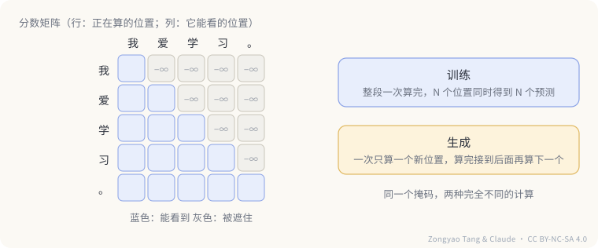
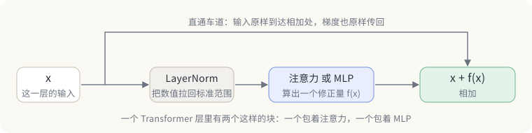

线索是：Transformer 的核心是让每个位置直接从所有其他位置取信息，这就是注意力 → 语言模型不能偷看后面的词，于是有了因果掩码，它带来了训练和生成的巨大差别 → 要把这样的层叠到几十上百层，靠的是残差连接和归一化 → 最后是多头：同时用几种方式去看。读的时候留意每一条的“所以”，它们分别通向 4.4、9.1、4.1。
第 1 部分 · 深度学习原理1.4 Transformer
这一单元回答Transformer 怎样让每个词“看到”上下文？为什么它能堆得这么深、做得这么大？
承接 1.1–1.2：训练方法不变，网络结构换成了注意力。
讲解
1注意力是一次“软查表”
每个位置生成一个查询（Q）、一个键（K）和一个值（V）。用 Q 和所有位置的 K 做点积，经过 softmax 得到权重，再按权重把所有位置的 V 加起来。哪个位置和你的问题越相关，它的信息占的比重越大。
要解决的问题。 理解一句话里的一个词，常常需要句子里别处的信息：“它”指的是谁、一个多义词在这里取哪个意思。每个位置需要一种办法，从其他位置取来和自己相关的信息。
查表的比喻。 普通的查表：拿一个键去字典里找完全相同的键，取出对应的值。注意力是它的“软”版本：
- 每个位置发出一个查询（Q）：我在找什么样的信息。
- 每个位置提供一个键（K）：我这里有什么样的信息。
- 每个位置还有一个值（V）：如果你要，我给出的内容是这个。
Q、K、V 都是由这个位置当前的表示各乘一个矩阵得到的，这三个矩阵是学出来的。
计算。 对某个位置：
- 用它的 Q 和每个位置的 K 做点积，得到一组分数。点积越大，说明“我要找的”和“你有的”越匹配。
- 对这组分数做 softmax，变成一组加起来等于 1 的权重。
- 按这组权重，把所有位置的 V 加权求和。这就是这个位置的输出。

Q 和 K 决定“看谁、看多少”，V 决定“取到什么” “软”在于它不是只取最匹配的那一个，而是按匹配程度取所有位置的混合；并且整个过程可导，可以用反向传播训练。
所有位置同时这样做。写成矩阵：分数矩阵 = Q × Kᵀ（N×N），输出 = softmax(分数) × V。
相对于 RNN。 在 Transformer 之前，处理序列用的是循环网络：信息从第一个位置出发，一个位置一个位置地往后传。
- 距离：RNN 里相隔 100 个位置的两个词，信息要传 100 步，沿途不断被稀释。注意力里任意两个位置一步直达。
- 并行：RNN 必须算完第 t 个位置才能算第 t+1 个，天生是串行的，GPU 帮不上忙。注意力的所有位置是同时算的，就是几次矩阵乘法，正是 GPU 最擅长的。Transformer 能扩展到今天的规模，和它适合并行硬件有直接关系。
代价。 每个位置都要和每个位置算一个分数：N×N。序列长度翻倍，运算量和这个中间矩阵的大小都变成四倍。
- 运算量上的平方，靠算力硬扛。
- 中间矩阵的读写和显存占用，是 4.4 的 Flash Attention 解决的：它证明了这个矩阵不必真的写出来。
- 再长，就要沿序列方向切开分到多张卡上（7.3 的上下文并行）。
位置信息。 注意力本身不知道哪个词在前、哪个在后（加权求和和顺序无关）。所以输入里要另外加上位置的编码。
打个比方像在图书馆查资料：拿你的问题（Q）去比对每本书的标签（K），越相关的书，从里面摘抄的内容（V）就用得越多。
所以每个位置都能直接从任何位置取信息，不用像 RNN 那样一步步往后传；代价是要算一个 N×N 的分数矩阵，序列一长，计算量和显存都按平方增长。这正是 4.4 的 Flash Attention 要解决的问题。
出处UDL §12.2 点积自注意力- 用注意力做语言模型时，有一条必须遵守的限制。
2因果掩码：训练时整段并行，生成时一词一词
解码器预测下一个词时，不能偷看后面的词。做法是把注意力里“未来位置”的分数设为负无穷，softmax 之后权重就是 0。这样一段文本里每个位置的预测可以同时计算。
语言模型的任务。 给定前面的词，预测下一个词。训练数据是大量的文本：对文本里的每一个位置，前面的内容是输入，这个位置实际的词是答案。
限制。 预测第 t 个词时，模型不能用到第 t 个及以后的词，否则就是看着答案答题。但注意力让每个位置能看到所有位置，包括后面的。
掩码。 在做 softmax 之前，把分数矩阵里“后面的位置”对应的分数改成负无穷。softmax 之后，这些位置的权重是 0，等于不存在。第 t 个位置于是只从第 1 到第 t 个位置取信息。分数矩阵是 N×N 的，被遮住的是它的上三角那一半。

被遮住的是分数矩阵的上三角 训练：一次算完所有位置。 把一整段 N 个词的文本送进模型。有了掩码，第 t 个位置的输出只依赖前 t 个词，所以它可以合法地用来预测第 t+1 个词。N 个位置的输出同时算出来，就同时得到了 N 个预测、N 个损失。一段文本相当于 N 个训练样本，而计算是一次完成的，全是大矩阵运算。这种做法叫 teacher forcing：每个位置看到的“前文”都是真实的文本。
生成：一次一个。 生成时没有现成的文本。要先算出第一个词，把它接到输入后面，才能算第二个词，依此类推。第 t+1 步的输入依赖第 t 步的输出，这个依赖关系无法并行。
同一个模型，两种完全不同的计算。
训练 生成 一次处理 整段的所有位置 一个新位置 主要运算 大矩阵 × 大矩阵 大矩阵 × 向量 瓶颈 算力（及其余算子的带宽） 显存带宽 每步之间 无依赖，可以大 batch 有依赖，必须串行 4.1 讲了为什么“矩阵乘向量”是带宽受限的，并由此估算出单用户生成速度的上限。同样是因为掩码保证了“前面位置的结果不受后面影响”，生成时才能把前面位置的 K、V 缓存起来反复用（4.1 的 KV cache）。
所以这一条小小的掩码，是训练系统和推理系统走上两条不同道路的分岔点。第 9 部分讲的全是它的后果。
打个比方像做填空题时用纸盖住后面的答案：整张卷子可以同时做，但每道题只能看它前面的内容。
所以训练能把一整段文本一次算完，高度并行；生成却必须一个 token 接一个 token 地来。推理（9.1）的瓶颈因此和训练完全不同。
承接 注意力是一次“软查表”出处UDL §12.7.2 掩码自注意力- 一层注意力加一层 MLP 是一个 Transformer 层。要把几十上百个这样的层叠起来还能训练，需要另外两样东西。
3残差连接：给信号和梯度修一条直通车道
每个模块的输出是“输入 + 这个模块算出来的修正量”。即使某一层学得不好，信号和梯度也能沿着这条直通的路传下去；LayerNorm 再把每一层的数值范围拉回稳定的区间。
没有残差连接时。 每一层的输出完全取代输入：x → f(x)。信号要到达最后一层，必须依次穿过每一层的变换；梯度要回到第一层，也必须逐层乘回来。1.2 讲过这会怎样：每层乘一个不是 1 的倍数，几十层之后不是消失就是爆炸。
残差连接。 把每一层改成：x → x + f(x)。输入原样保留，这一层只负责算出一个“修正量”加上去。

输入走两条路：一条经过模块，一条直通 对前向。 最后一层的输出 = 最初的输入 + 第 1 层的修正 + 第 2 层的修正 + …。每一层的贡献都直接到达输出，不需要穿过后面的层。一个层即使什么都没学会（f 输出接近零），也只是没有贡献，不会破坏已有的信息。
对反向。 1.1 讲过：一个值走了两条路，梯度是两路之和。x 既直接到输出，又经过 f。所以回传到 x 的梯度 = 直接传回来的那一份（原封不动）+ 经过 f 的那一份。第一份不经过任何乘法。于是从损失到任何一层，都有一条“直通”的路，梯度沿着它回传时不会被逐层缩小。
换个角度看每一层在学什么。 不用残差连接时，每一层要学“完整的新表示”；用了之后，每一层只需要学“在现有表示上改一点什么”。后者容易得多，初始时什么都不改也是一个不错的起点。
归一化层。 残差连接把很多层的输出加在一起，层数多了，数值的大小会逐渐漂移。LayerNorm 对每个位置的表示做一次标准化：减去均值，除以标准差，再乘、加两个可学习的参数。它保证送进每个模块的数值都在一个稳定的范围里。现在的 Transformer 通常把它放在每个模块的输入处（先归一化，再做注意力或 MLP，再和原输入相加）。
（卷积网络常用的是批归一化，它的统计量依赖整个 batch；LayerNorm 只依赖单个样本，更适合序列模型，分布式训练时也不需要在卡之间同步统计量。）
从系统的角度看这两样。
- 残差相加和 LayerNorm 都是逐元素或带归约的小运算，几乎不做计算，却要把整个张量读写一遍。它们是 4.1 那张表里“带宽受限”的主要成员，也是 4.2 的融合最直接的受益者。
- 残差连接让每一层的输入都要保留到相加的时候，激活值的显存因此不能提前释放（2.1 的第四笔账）。
所以 Transformer 之所以“深得起来”，是这两个设计的功劳；它在 GPU 上“哪里慢”，也和这两个设计直接相关。
打个比方像大楼里每层都有直达电梯：哪层的楼梯堵了，人照样能上下。
所以 Transformer 能堆到几十上百层；每一层只需要学一点“修正”，而不是从头重新表示一切。
出处UDL §11.2 残差连接- 最后一个部件：一个位置同时需要关注好几种不同的关系。
4多头注意力：同时用几种不同的方式去“看”
把表示的维度分成几份，每份独立做一次注意力，最后拼起来。每个头有自己的 Q、K、V 变换，可以关注不同类型的关系。
为什么一组不够。 一次注意力，每个位置得到的是其他位置的一种加权平均。但一个词和上下文的关系有很多种：它的主语是谁、它修饰的是什么、它指代的是哪个词。一组权重只能表达一种“关注方式”，把几种关系搅在一起会互相冲淡。
做法。 把表示的维度分成 H 份。设隐藏维度是 768，分成 12 个头，每个头 64 维。每个头有自己的 Q、K、V 变换，在自己的 64 维里独立地做一次完整的注意力，得到一个 64 维的输出。最后把 12 个输出拼接回 768 维，再过一个线性层混合。
每个头可以学会关注不同的东西。研究者观察训练好的模型，确实能看到有的头关注相邻的词，有的关注句法上相关的词，等等。
为什么计算量几乎不变。 一个头的注意力，运算量和它的维度成正比。12 个 64 维的头，和 1 个 768 维的头，总运算量是一样的。多出来的只是 N×N 的分数矩阵从 1 个变成了 12 个：每个头都有自己的一份。
实现上：多一个维度。 代码里并不是循环 12 次。张量的形状从（batch, 位置, 768）变成（batch, 头, 位置, 64），把“头”当成和 batch 一样的并行维度。一次矩阵运算同时算完所有 batch、所有头。这是 GPU 上的常见手法：凡是互相独立的重复计算，都可以叠成张量的一个维度一起算。
头这个维度在后面的用处。
- 张量并行（7.3）：各个头的计算互相独立，所以可以把不同的头分给不同的卡。
- Flash Attention（4.4）：论文里的 d 指的是每个头的维度（比如 64），它很小，这是“一块 Q、K、V 能放进片上存储”的前提。
- KV cache（4.1、9.1）：每个头都要缓存自己的 K 和 V。让几个头共用一组 K、V 可以成倍地缩小缓存，这是 9.1 提到的 GQA。
- 维度凑整（1.5）：每个头的维度取 64 这样的数，不是巧合。
到这里，一个 Transformer 层的全部部件都齐了：多头注意力、MLP、两处残差连接、两处归一化。4.1 会把它们逐个拆成 GPU 上的算子。
打个比方像几位编辑同时读同一篇稿子：有人盯语法，有人看指代关系，有人看语气。
所以多头几乎不增加计算量（每个头的维度变小了），却能同时捕捉多种关系；实现上，多头就是多了一个可以并行的维度，正适合 GPU。
承接 注意力是一次“软查表”出处UDL §12.3.3 多头注意力
串起来
注意力是一次软查表：用 Q 和所有的 K 算相关度，按相关度对 V 加权求和，代价是 N×N 的分数矩阵。因果掩码让训练可以整段并行，生成却只能逐词进行。残差连接和归一化让信号与梯度能穿过很深的网络。多头是并行的几组注意力。
考考自己
不看讲解，用自己的话讲一遍。
- 自注意力里的 Q、K、V 各起什么作用？它相对于 RNN 的好处和代价是什么？
- 因果掩码是怎样实现的？它为什么让训练可以并行，生成却必须逐个进行？
- 残差连接是怎样让很深的网络变得可以训练的？归一化层在其中起什么作用？
- 多头注意力是怎样实现的？为什么它几乎不增加计算量？
术语
- self-attention
- 自注意力
- causal mask
- 因果掩码
- residual connection
- 残差连接
- layer normalization
- 层归一化
- positional encoding
- 位置编码